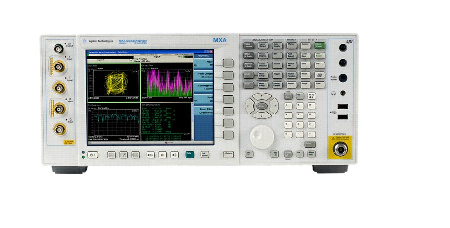

信号分析仪器

产品简介
□产品型号：N9020A MXA
□产品名称：信号分析仪
□MXA 信号分析仪是 X 系列测试工具中的一员，它是综合利用仪器、测量和软件进行信号分析的演进方法。它的灵活性能够满足您多个产品和项目对商业和技术的要求�D�D无论是现在还是在未来
功能特性
□20 Hz ～ 3.6，8.4，13.6 或 26.5 GHz；高达 26.5 GHz 的内部前置放大器选件
□25 MHz（标配）或 40 MHz（可选）分析带宽
□基本 EMI 预先一致性测量功能，包括 CISPR 16-1-1 带宽、探测器、幅度校正因数、频段预置、游标处调谐和监听以及限制线
性能
□±0.23 dB 绝对幅度精度
□利用前置放大器可生成 -166 dBm 显示平均噪声电平（DANL）
□ -78 dB W-CDMA ACLR 动态范围（噪声修正功能启动）
□ 符合 LXI C 类标准，并支持 SCPI 和 IVI-COM
□USB 2.0、1000Base-T LAN、GPIB
□通用的 X 系列用户界面 / 开放式 Windows? XP 操作系统
应用行业
□ 设计和调试；
□ 制造测试和质量控制；
□ 服务和维修